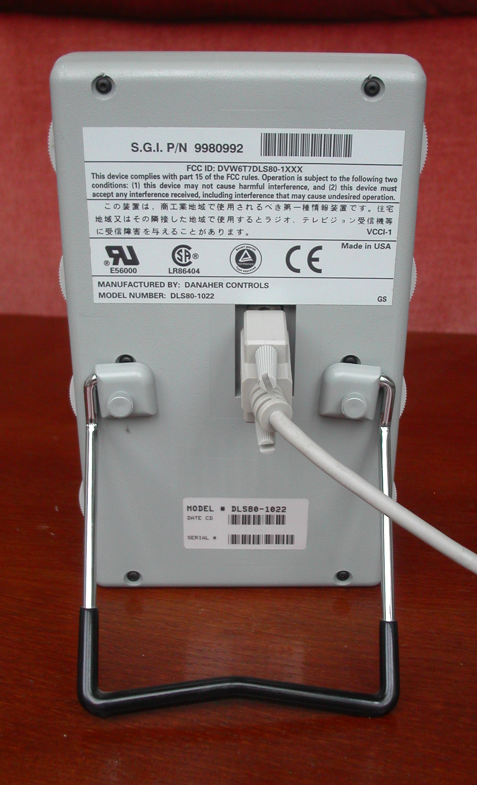
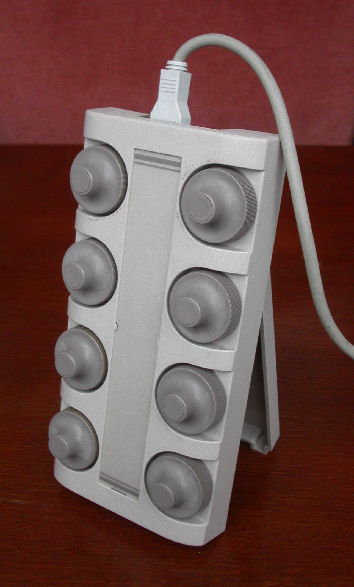

SGI Dial and Button Box
Eight aluminum knobs, thirty-two buttons, and a design philosophy that said your tools should feel like instruments.

Overview
The SGI Dial and Button Box was a dedicated 3D input peripheral for Silicon Graphics IRIS workstations, shipping from approximately 1986 through the mid-1990s. It provided eight large continuous-rotation optical encoder dials and thirty-two momentary pushbuttons in a 4×8 grid, housed in a dark grey metal chassis approximately 12–14 inches wide with an angled upright stand.
The dials had no detents and no end stops — they spun freely, each revolution generating 256–1,024 counts depending on driver scaling. The buttons featured removable transparent keycaps for paper labels. Connection was via a single DE-9 RS-232 serial port at 9600 baud (some models required a separate 5V DC power brick). The device reported 6-byte packets containing signed 16-bit dial deltas and button state. Two known production models exist: the DLS80-1022 (manufactured by Danaher Controls, USA) and the SN-921 (Japanese OEM, different chassis design).
In professional 3D software — Alias PowerAnimator, Wavefront Advanced Visualizer, Softimage 3D — the dials were typically mapped to spatial navigation: three axes of rotation, one zoom, two pan, and two auxiliary parameters. The non-dominant hand (usually left) worked the dials for continuous spatial adjustments, while the dominant hand operated the mouse for discrete selection and menu interaction. This asymmetric bimanual workflow, studied by Bill Buxton's HCI group at the University of Toronto, mapped cleanly onto Guiard's Kinematic Chain Model of human bimanual action. The dial box was also rebadged for Sun Microsystems workstations. Driver support persisted in IRIX through the late 1990s, and third-party Linux/Xorg drivers were later developed by the open-source community.
Deep dive
The dial box represents a design philosophy that treats a computing workstation as an instrument, not an appliance. In this worldview, parameters deserve dedicated, physically present controls — each dial has a fixed meaning, and the user's body learns that meaning through proprioception and muscle memory. After weeks of use, an animator could reach for the 'zoom' dial without looking, the way a violinist finds a position on the fingerboard. This philosophy has deep roots: analog scientific instruments, the LINC computer's eight built-in knobs (1962), Evans & Sutherland's custom CAD control panels, and audio mixing consoles all embodied it. The dial box was one of its last mass-produced expressions before everything collapsed into the mouse-and-software-widget model. It asks a question that still hasn't been answered: why do audio engineers still mix on physical consoles, but 3D artists lost their knobs?
The dial box shipped years before HCI researchers formalized asymmetric bimanual interaction. When Bill Buxton's group at the University of Toronto began studying two-handed input in the late 1980s, they used SGI dial boxes as their primary experimental platform. The device perfectly embodied what Yves Guiard (1987) described in his Kinematic Chain Model: the non-dominant (left) hand sets and adjusts the spatial frame of reference (coarse, continuous, low-frequency actions on the dials), while the dominant (right) hand performs precise operations within that frame (fine, discrete, high-frequency actions with the mouse). Animators didn't need a theory to tell them this worked — they discovered it through daily practice, developing a fluency with 8-axis simultaneous adjustment that no mouse could replicate.
Modern UX design rarely treats muscle memory as an explicit design goal for parameter control. The dial box was built around it. Each dial was physically distinct by position — same size and feel, but the spatial layout was fixed and learnable. The 32 buttons had transparent keycaps for paper labels, allowing per-software customization. Professional animators working 8–12 hour sessions developed reflexive, unconscious access to parameters that, in a mouse-only workflow, would require repeated attention-shifting between the model and the toolbar. The dial box acknowledged something that software-only interfaces often forget: when your hands know where something is, your eyes can stay on the work.
The dial box died as a product, but its parameter layout became immortal. The standard mapping — three outer dials for X/Y/Z rotation, one for zoom/dolly, two for X/Y pan, and two for auxiliary functions — was adopted by virtually every 3D software package's navigation widget. Maya, Blender, Cinema 4D, Fusion 360: their orbit/zoom/pan tools all inherit the SGI dial box's axis assignments. Even the 3Dconnexion SpaceMouse (which replaced the dial box) offers the same degrees of freedom in a single puck. The physical knobs are gone, but their conceptual layout is burned into every 3D application you use today.
In recent years, the dedicated-physical-control philosophy has seen a renaissance through programmable control surfaces: Elgato Stream Deck, Loupedeck, Monogram Creative Console, and MIDI controllers mapped to Blender or Maya. These devices attempt to restore what the dial box offered — dedicated, task-specific physical controls that the user's body can learn. They are not identical (most use buttons and sliders rather than infinite-rotation encoders), but they are direct descendants of the same idea: that creative professionals deserve instruments, not just toolbars.
Team & pioneers
- Silicon Graphics, Inc. (SGI). Mountain View, CA. Founded by Jim Clark (1981). The dial box was an internal hardware tools-group project.
- Danaher Controls. OEM manufacturer of the DLS80-1022 model. Industrial controls company (now part of Fortive).
- Bill Buxton. HCI researcher at University of Toronto who used the SGI dial box as a platform for foundational bimanual input studies.
Media


Sources
- Silicon Graphics — Wikipedia
- Wikimedia Commons: Silicon Graphics dial box category
- Buxton, W. & Myers, B. "A Study in Two-Handed Input" (CHI 1986)
- Guiard, Y. "Asymmetric Division of Labor in Human Skilled Bimanual Action: The Kinematic Chain as a Model" (Journal of Motor Behavior, 1987)
- Zhai, S. "Human Performance in Six Degree of Freedom Input Control" (PhD thesis, University of Toronto, 1995)
- Computer History Museum collections (SGI hardware)